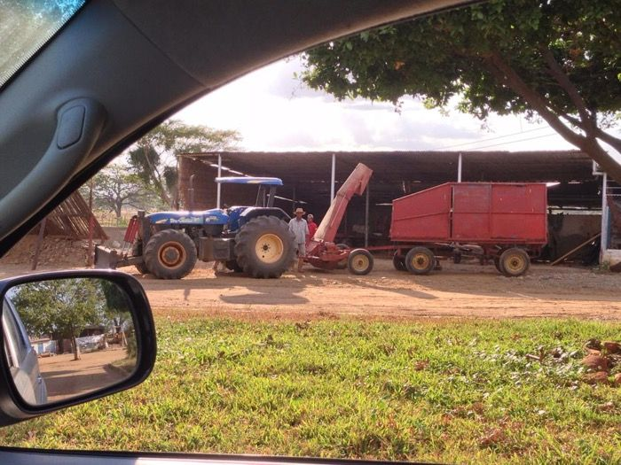

A family farming company at KM 70 Carretera, Villa del Rosario 4033, Zulia, Venezuela (Carretera de Perijá, Troncal 6, the road toward Maracaibo). Rosario de Perijá is the municipality. The area is known for its cattle and dairy tradition, near the Río Palmar. Locally the farm is known as El 70 or Finca El 70.
Dairy cattle
The farm has been dedicated to milk production, a core part of the economy of Rosario de Perijá. For questions about production, please contact the family directly.
Beef cattle
Besides the dairy, the farm also raises beef cattle, as is traditional in the Perijá region. If you would like information about the cattle or the farm's work, write to us.
Silvopasture
At El 70 we are developing a silvopasture project: cattle together with trees and pasture on the same land, at KM 70 Carretera, Villa del Rosario 4033 (Rosario de Perijá municipality).
Pastures at El 70, km 70 of Carretera de Perijá, La Villa del Rosario (Zulia)

Work in the yard at El 70 farm
Swipe for more →
Nearby infrastructure: Carretera de Perijá (Troncal 6), electricity and the Río Palmar
Calculating distances…
Straight-line distances from the farm, except those marked as by road (calculated with OSRM). Data comes from OpenStreetMap (queried in October 2026) and may be incomplete or out of date. There are no verified open data on cell towers in the area.
Open to serious offers
El 70 is part of our family history. Agropecuaria Blimar C.A. will consider exceptional offers to buy — offers that truly match the value of this land — and is open to leases or partnerships, especially with energy companies: oil and gas, or solar energy projects.
The family owns both sides of the road: the larger lot (~462 ha), north of Troncal 6, and the smaller lot (~40 ha), south toward the Río Palmar. The larger lot has road access on both sides, so you can come in to see the farm in an ordinary car; a 4x4 is not needed.
If your interest is serious, write to us directly and personally at blitz@mail.grokbot.com. We prefer to deal directly, not through intermediaries. We don't publish a price.
At El 70 the work is done as a team, with care for the land and the animals. If you would like to join us — in milking, with the cattle, in the fields and machinery, or in administration — tell us a little about yourself. We read every message and will write back.
Who we are
Agropecuaria Blimar C.A. is a family farming company. The farm, known locally as El 70 or Finca El 70, is at KM 70 Carretera, Villa del Rosario 4033, Zulia, Venezuela (Carretera de Perijá). Rosario de Perijá is the municipality.
El 70 is part of our family history. We are open to serious offers to buy or lease; see Open to serious offers. We prefer to deal directly, not through intermediaries.
Frequently asked questions
Where is Agropecuaria Blimar?
Agropecuaria Blimar C.A., known as Finca El 70 or El 70 farm, is at KM 70 Carretera, Villa del Rosario 4033, Zulia, Venezuela (Carretera de Perijá). Rosario de Perijá is the name of the municipality.
What does Agropecuaria Blimar do?
Agropecuaria Blimar C.A. is a family cattle ranch — dairy and beef — and a silvopasture project at El 70.
What are Agropecuaria Blimar's hours?
Agropecuaria Blimar C.A. is open Monday from 09:00 to 17:00, and Tuesday to Sunday from 09:00 to 18:30.
How can I contact Agropecuaria Blimar?
Agropecuaria Blimar C.A. takes inquiries at blitz@mail.grokbot.com. We don't publish a phone number on this page.
Is the farm for sale?
Agropecuaria Blimar C.A. will consider exceptional offers to buy. We don't publish a price. Serious inquiries are welcome at blitz@mail.grokbot.com.
Can it be leased for solar energy or oil and gas?
Yes. We are open to leases or partnerships with energy companies — oil and gas, or solar energy projects — and to other serious proposals. Write to us at blitz@mail.grokbot.com.
Contact
Agropecuaria Blimar C.A. · Finca El 70 (El 70 farm)
Address: KM 70 Carretera, Villa del Rosario 4033, Zulia, Venezuela